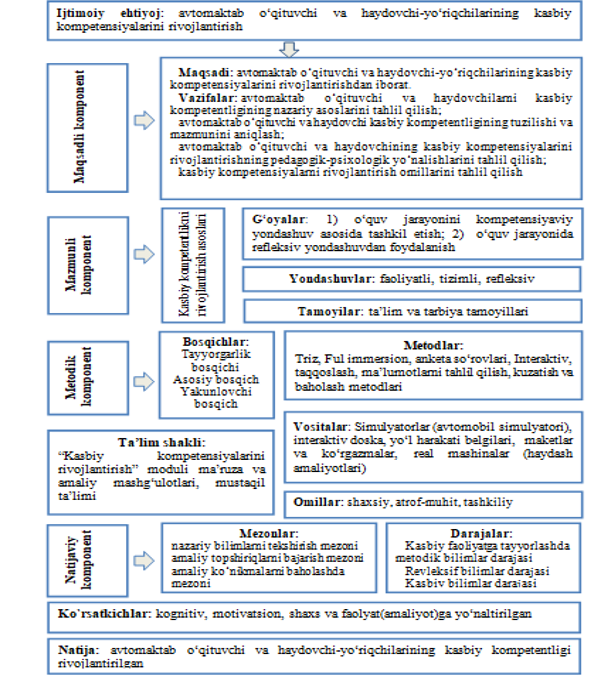

2.2.Avtomaktab o‘qituvchi va haydovchi-yo‘riqchilarining kasbiy kompetentligini rivojlantirish modeli
O‘zbekiston Respublikasi Prezidentining 2019-yil 8-oktyabrdagi Farmoni bilan tasdiqlangan “O‘zbekiston Respublikasi oliy ta’lim tizimini 2030-yilgacha rivojlantirish konsepsiyasi”ga muvofiq, mamlakatda oliy ta’lim bilan qamrov darajasini oshirish, xalqaro standartlar asosida yuqori malakali, kreativ va tizimli fikrlaydigan, mustaqil qaror qabul qila oladigan kadrlar tayyorlash, ularning intellektual qobiliyatlarini namoyon etishi va ma’naviy barkamol shaxs sifatida shakllanishi uchun zarur shart-sharoitlarni yaratish maqsadlari belgilangan. Shuningdek, mamlakatning barcha sohalarida islohotlarni amalga oshirish, odamlarning dunyoqarashini o‘zgartirish va zamon talablariga javob beradigan yetuk mutaxassis kadrlarni tayyorlash zarurati ta’kidlanadi.
Avtomaktab o‘qituvchilari va haydovchi-yo‘riqchilarini tayyorlash, ta’lim va tarbiya berish tizimi islohotlar talablari bilan chambarchas bog‘liq bo‘lib, bu muhim ahamiyatga ega. Avtomaktab o‘qituvchilari va haydovchi-yo‘riqchilarining kasbiy kompetensiyalarini rivojlantirish modeli komponentlari shaxsga yo‘naltirilgan yondashuv asosida, kasbiy-amaliy faoliyatni rivojlantiruvchi ta’lim shakllarini tanlash orqali takomillashtirilgan
Zamon talablariga javob bera oladigan mutaxassis kadrlarni tayyorlash, davlat talablari asosida ta’lim tizimi va uning barcha tarkibiy tuzilmalarini takomillashtirib borish dolzarb masalalardan biridir. Kasbiy kompetensiyalarni rivojlantirish modelini ishlab chiqish uchun ijtimoiy ehtiyojlarni tahlil qilish quyidagi yo‘nalishlarda amalga oshiriladi:
Avtomaktab o‘qituvchilari va haydovchi-yo‘riqchilarini tayyorlash, ta’lim va tarbiya berish tizimi islohotlar talablari bilan chambarchas bog‘liq bo‘lib, bu muhim ahamiyatga ega. Avtomaktab o‘qituvchilari va haydovchi-yo‘riqchilarining kasbiy kompetensiyalarini rivojlantirish modeli komponentlari shaxsga yo‘naltirilgan yondashuv asosida, kasbiy-amaliy faoliyatni rivojlantiruvchi ta’lim shakllarini tanlash orqali takomillashtirilgan
Zamon talablariga javob bera oladigan mutaxassis kadrlarni tayyorlash, davlat talablari asosida ta’lim tizimi va uning barcha tarkibiy tuzilmalarini takomillashtirib borish dolzarb masalalardan biridir. Kasbiy kompetensiyalarni rivojlantirish modelini ishlab chiqish uchun ijtimoiy ehtiyojlarni tahlil qilish quyidagi yo‘nalishlarda amalga oshiriladi:
Professor o‘qituvchilarning
1. Avtomaktab o‘qituvchilari va haydovchi-yo‘riqchilarini o‘qitish uchun ta’lim maydonini tashkil etish.
2. Kasbiy kompetensiyalarni rivojlantirish darajasi va bosqichlarini tanlash.
3. Avtomaktab o‘qituvchilari va haydovchi-yo‘riqchilarining kasbiy kompetensiyasining komponentlarini aniqlash.
Model maqsadli, mazmunli, metodik va natijaviy komponentlardan iborat.
Modelning maqsadli komponenti maqsad va vazifalardan tashkil topgan. Modelning maqsadi avtomaktab o‘qituvchilari va haydovchi-yo‘riqchilarining kasbiy kompetensiyalarini rivojlantirishdan iborat bo‘lib, quyidagi vazifalarni o‘z ichiga oladi:
avtomaktab o‘qituvchilari va haydovchilarining kasbiy kompetensiyalarining nazariy asoslarini tahlil qilish;
avtomaktab o‘qituvchilari va haydovchilarining kasbiy kompetensiyalarining tuzilishi va mazmunini aniqlash;
avtomaktab o‘qituvchilari va haydovchilarining kasbiy kompetensiyalarini rivojlantirishning pedagogik-psixologik yo‘nalishlarini tahlil qilish;
kasbiy kompetensiyalarni rivojlantirish omillarini tahlil qilish.
Modelning mazmunli komponentida kasbiy kompetensiyalarni rivojlantirish asoslari sifatida g‘oyalar, yondashuvlar va tamoyillar qabul qilingan. O‘quv jarayonini kompetensiyaviy yondashuv asosida tashkil etish va o‘quv jarayonida refleksiv yondashuvdan foydalanish kabi g‘oyalar asosida faoliyatli, tizimli va refleksiv yondashuvlar hamda ta’lim va tarbiya tamoyillari belgilandi. Professor- o‘qituvchilarni ishga qiziqtirishga rag‘batlantirishning ayrim uslublari orqali ham, bu uslublarni birgalikda qo‘llash orqali ham erishish mumkin.
1. Avtomaktab o‘qituvchilari va haydovchi-yo‘riqchilarini o‘qitish uchun ta’lim maydonini tashkil etish.
2. Kasbiy kompetensiyalarni rivojlantirish darajasi va bosqichlarini tanlash.
3. Avtomaktab o‘qituvchilari va haydovchi-yo‘riqchilarining kasbiy kompetensiyasining komponentlarini aniqlash.
Model maqsadli, mazmunli, metodik va natijaviy komponentlardan iborat.
Modelning maqsadli komponenti maqsad va vazifalardan tashkil topgan. Modelning maqsadi avtomaktab o‘qituvchilari va haydovchi-yo‘riqchilarining kasbiy kompetensiyalarini rivojlantirishdan iborat bo‘lib, quyidagi vazifalarni o‘z ichiga oladi:
avtomaktab o‘qituvchilari va haydovchilarining kasbiy kompetensiyalarining nazariy asoslarini tahlil qilish;
avtomaktab o‘qituvchilari va haydovchilarining kasbiy kompetensiyalarining tuzilishi va mazmunini aniqlash;
avtomaktab o‘qituvchilari va haydovchilarining kasbiy kompetensiyalarini rivojlantirishning pedagogik-psixologik yo‘nalishlarini tahlil qilish;
kasbiy kompetensiyalarni rivojlantirish omillarini tahlil qilish.
Modelning mazmunli komponentida kasbiy kompetensiyalarni rivojlantirish asoslari sifatida g‘oyalar, yondashuvlar va tamoyillar qabul qilingan. O‘quv jarayonini kompetensiyaviy yondashuv asosida tashkil etish va o‘quv jarayonida refleksiv yondashuvdan foydalanish kabi g‘oyalar asosida faoliyatli, tizimli va refleksiv yondashuvlar hamda ta’lim va tarbiya tamoyillari belgilandi. Professor- o‘qituvchilarni ishga qiziqtirishga rag‘batlantirishning ayrim uslublari orqali ham, bu uslublarni birgalikda qo‘llash orqali ham erishish mumkin.

Avtomaktab o‘qituvchi va haydovchi-yo‘riqchilarining kasbiy kompetensiyalarini rivojlantirish modeli
Modelning metodik komponentida “Kasbiy kompetensiyalarni rivojlantirish” moduli asosida rivojlantirish bosqichlari, metodlar, vositalar va omillar aniqlangan.
Modul bo‘yicha avtomaktab o‘qituvchilari va haydovchilarining bilim, ko‘nikma, malaka va kompetensiyalariga qo‘yiladigan talablar quyidagilarni o‘z ichiga oladi: pedagogning kasbiy kompetensiyalarining tuzilishi va mazmuni; kasbiy kompetensiyalarni rivojlantirish omillari; innovatsion ta’lim muhiti sharoitida pedagogning kasbiy kompetensiyalarini rivojlantirish; pedagogning kasbiy kompetensiyalarini rivojlantirishning pedagogik-psixologik yo‘nalishlari; pedagogning kasbiy kompetensiyalarini rivojlantirish xususiyatlari; pedagoglarda kreativ kompetensiyalarni rivojlantirishning zarur shart-sharoitlari va modellari; kasbiy faoliyatda tayanch va xususiy-metodik kompetensiyalarni rivojlantirish yo‘llari; shaxsga yo‘naltirilgan ta’lim texnologiyalaridan foydalanish; fanlarni o‘qitishda didaktik o‘yin texnologiyalaridan foydalanish; amaliy va rolli o‘yinlar; pedagogik nizolarni samarali hal etish yo‘llari; zamonaviy pedagog imiji va modelini ishlab chiqish; o‘qituvchining o‘z-o‘zini kasbiy va shaxsiy takomillashtirish yo‘llari; kreativlik va pedagogik ijodkorlikdan foydalanish ko‘nikma va malakalari; talabalarning o‘quv-bilish faoliyatini faollashtirish va mustaqil ta’limini tashkil etish; pedagogning kasbiy kompetensiyalarini rivojlantirishning pedagogik-psixologik trayektoriyalarini ishlab chiqish.
“Kasbiy kompetensiyalarni rivojlantirish” moduli ma’ruza va amaliy mashg‘ulotlar shaklida olib boriladi. Avtomaktab o‘qituvchilari va haydovchilarini o‘qitish jarayonida zamonaviy ta’lim metodlari va axborot-kommunikatsiya texnologiyalari qo‘llaniladi. Ma’ruza darslarida zamonaviy kompyuter texnologiyalari yordamida taqdimotlar va elektron-didaktik vositalardan foydalaniladi. Amaliy mashg‘ulotlarda texnik vositalar, bliss-so‘rovlar, aqliy hujum, guruhli fikrlash, kichik guruhlar bilan ishlash va boshqa interfaol ta’lim metodlaridan foydalanish nazarda tutiladi.
Modul bo‘yicha avtomaktab o‘qituvchilari va haydovchilarining bilim, ko‘nikma, malaka va kompetensiyalariga qo‘yiladigan talablar quyidagilarni o‘z ichiga oladi: pedagogning kasbiy kompetensiyalarining tuzilishi va mazmuni; kasbiy kompetensiyalarni rivojlantirish omillari; innovatsion ta’lim muhiti sharoitida pedagogning kasbiy kompetensiyalarini rivojlantirish; pedagogning kasbiy kompetensiyalarini rivojlantirishning pedagogik-psixologik yo‘nalishlari; pedagogning kasbiy kompetensiyalarini rivojlantirish xususiyatlari; pedagoglarda kreativ kompetensiyalarni rivojlantirishning zarur shart-sharoitlari va modellari; kasbiy faoliyatda tayanch va xususiy-metodik kompetensiyalarni rivojlantirish yo‘llari; shaxsga yo‘naltirilgan ta’lim texnologiyalaridan foydalanish; fanlarni o‘qitishda didaktik o‘yin texnologiyalaridan foydalanish; amaliy va rolli o‘yinlar; pedagogik nizolarni samarali hal etish yo‘llari; zamonaviy pedagog imiji va modelini ishlab chiqish; o‘qituvchining o‘z-o‘zini kasbiy va shaxsiy takomillashtirish yo‘llari; kreativlik va pedagogik ijodkorlikdan foydalanish ko‘nikma va malakalari; talabalarning o‘quv-bilish faoliyatini faollashtirish va mustaqil ta’limini tashkil etish; pedagogning kasbiy kompetensiyalarini rivojlantirishning pedagogik-psixologik trayektoriyalarini ishlab chiqish.
“Kasbiy kompetensiyalarni rivojlantirish” moduli ma’ruza va amaliy mashg‘ulotlar shaklida olib boriladi. Avtomaktab o‘qituvchilari va haydovchilarini o‘qitish jarayonida zamonaviy ta’lim metodlari va axborot-kommunikatsiya texnologiyalari qo‘llaniladi. Ma’ruza darslarida zamonaviy kompyuter texnologiyalari yordamida taqdimotlar va elektron-didaktik vositalardan foydalaniladi. Amaliy mashg‘ulotlarda texnik vositalar, bliss-so‘rovlar, aqliy hujum, guruhli fikrlash, kichik guruhlar bilan ishlash va boshqa interfaol ta’lim metodlaridan foydalanish nazarda tutiladi.